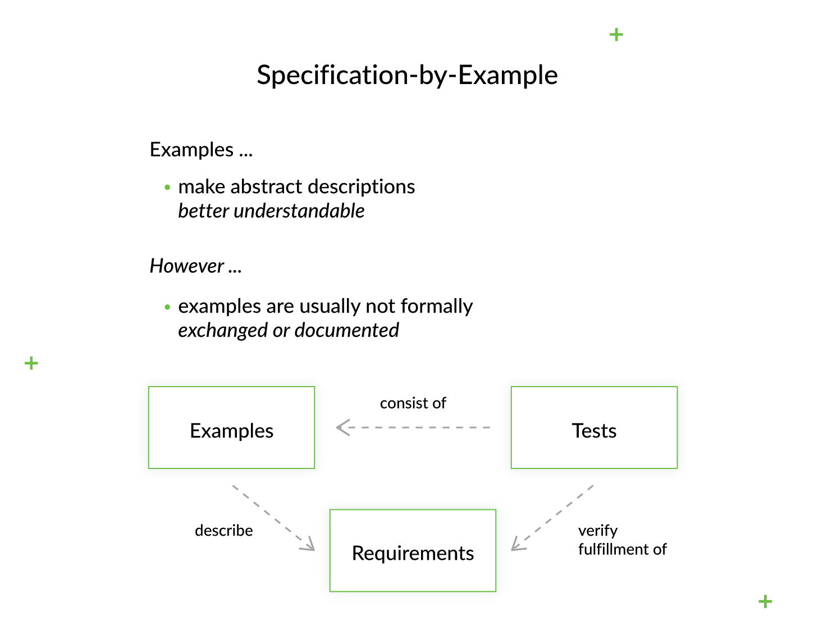

Spetsifikatsioon näite järgi (SBE) on koostööl põhinev lähenemisviis tarkvaratoodete nõuete ja ärile suunatud funktsionaalsete testide määratlemiseks, mis põhineb nõuete hõivamisel ja illustreerimisel, kasutades abstraktsete avalduste asemel realistlikke näiteid. Seda rakendatakse agiilsete tarkvaraarendusmeetodite, eriti käitumispõhise arendamise kontekstis.
See lähenemisviis on eriti edukas nõuete ja funktsionaalsete testide haldamiseks suuremahuliste projektide puhul, mis on märkimisväärselt keerukad valdkonnas ja organisatsiooniliselt.
Näitepõhist spetsifikatsiooni nimetatakse ka näitepõhiseks arenduseks, käivitatavateks nõueteks, aktsepteerimiskatsel põhinevaks arendamiseks (ATDD või A-TDD), agiilseks vastuvõtutestiks, testipõhisteks nõueteks (TDR).
